This week's goal was to find a real problem, then design and 3D print something useful or functional to solve it. No artwork. I designed a touch-free almond dispenser that screws onto the almond jar I already own in place of its lid. I press a paddle, which acts as the lever, to open a spring-loaded gate at the bottom of the funnel, and the spring closes the gate when I let go. Legs raise the dispenser so I can put a plate or a hand under the outlet.
Reading: Great Questions Lead to Great Design: A Guide to the Design-thinking Process [1].
Asking smart questions matters because a design can only be as good as the problem it is aimed at, and the first answer to "what is wrong?" is usually a symptom. The article argues that good questions uncover the real problem before anyone starts drawing solutions, and it names the 5 Whys as a way to keep digging until a root cause shows up [1]. I used that on this project. My first answer was "my roommates take my almonds," but asking why that bothered me led to the real problem: a hand reaching into the jar touches every almond near it, and I cannot know if that hand was clean. That pointed me to a very different design than a lock or a smaller jar, because the goal became that each person only touches the almonds they will eat. The article also says that framing questions well, such as asking what other options were considered, builds understanding and avoids defending the first idea [1]. I used that when I weighed alternatives for the funnel, the gate, and the legs.
Purpose: I eat almonds as a snack while I study, and my roommates started doing the same from my jar. I do not mind sharing, but the only way to get almonds out is to put a hand in the jar, and I have no way to know if that hand is clean. The dispenser removes that contact: the jar stays closed, and a person only touches the almonds they take.
Research I did:
I measured the jar neck and the lid with digital calipers. These numbers set the size of the connector and its thread.
| Measurement | Value |
|---|---|
| Neck diameter without the thread | 85.57 mm |
| Neck diameter with the thread | 88.55 mm |
| Thread depth (calculated: (88.55 − 85.57) / 2) | 1.49 mm |
| Thread pitch | 5.44 mm |
| Thread ridge width | 3.00 mm |
| Thread start and length | Single start, about 365 degrees around the neck |
| Lid depth | 13.50 mm, measured with the depth rod of the calipers inside the lid |
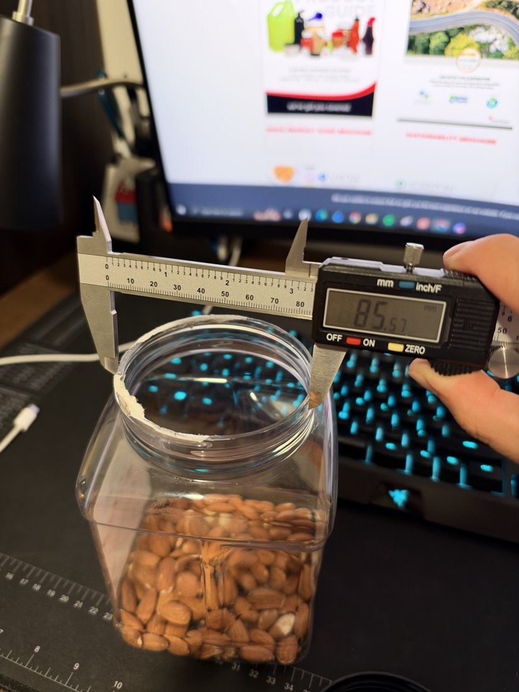
Neck diameter without the thread: 85.57 mm.
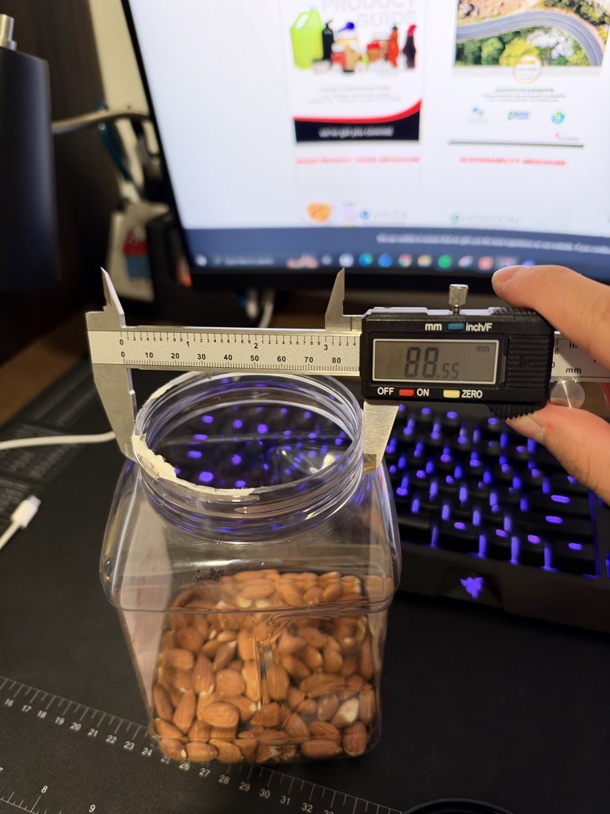
Neck diameter with the thread: 88.55 mm.
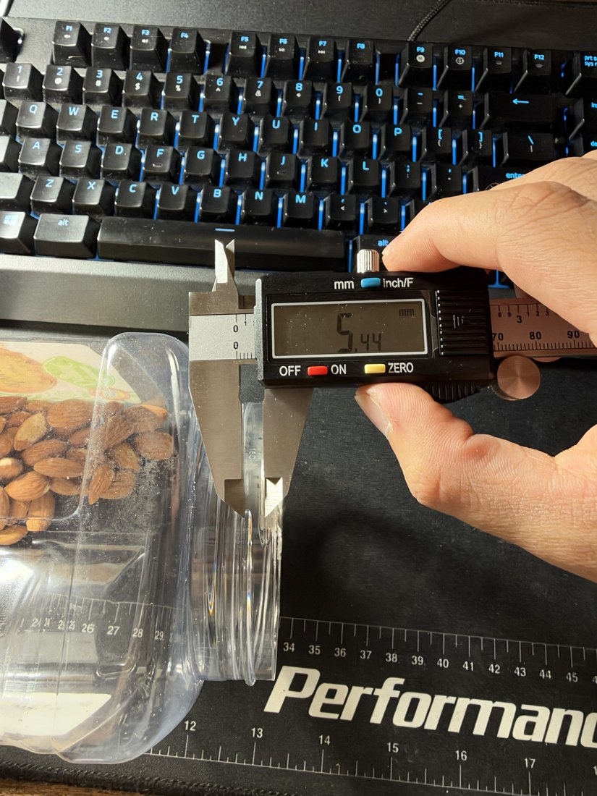
Thread pitch: 5.44 mm.
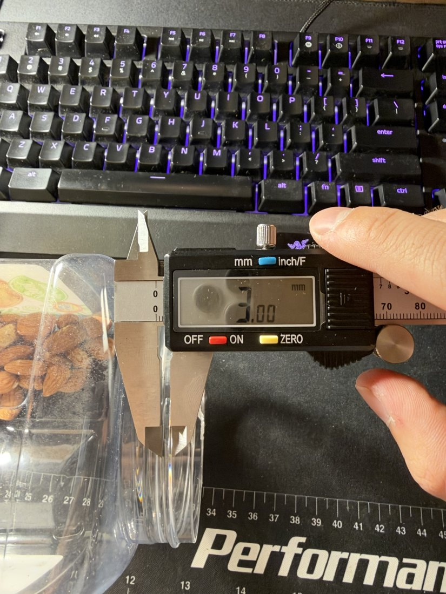
Thread ridge width: 3.00 mm.
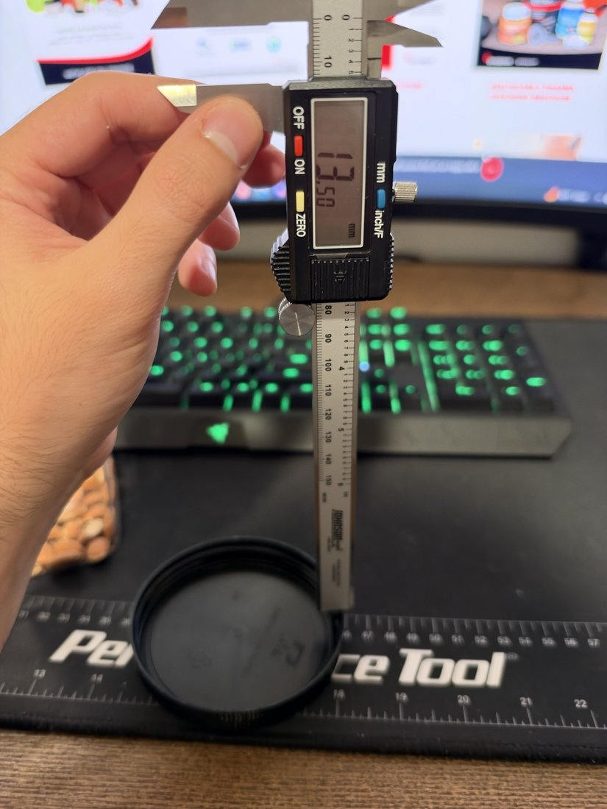
Lid depth: 13.50 mm, measured with the depth rod of the calipers.
I looked for existing dispensers that use a lever and a spring-loaded door, since that is the part of my design I most needed to get right. All of them are gravity-fed bins or tabletop dispensers.
| Mechanism | How the door and spring work |
|---|---|
| US 6,241,123, bulk food bin (Elmore, 2001) [5] | An external handle rotates a door open. Springs hooked inside the front piece return the handle, and an adjustable stopper limits how far the door opens. |
| US 5,730,333, retail bulk dispenser (Baluk et al., 1998) [6] | A sliding gate plate with a forward handle. A spring returns the gate to closed, a stop screw limits its travel, and rubber bumpers soften the return. |
| US 4,770,125, animal food dispenser (Gold et al., 1988) [7] | A lever turns a metering pocket over a chute. A clock spring on the lever's axle returns it, and it has to be strong enough to lift the lever back against the weight of the food. |
| US 10,219,635, tabletop nut dispenser (Eso, 2019) [8] | A lever arm raises a housing, which opens a hinged back door. Nuts fall down a chute, and a spring returns the arm. |
Mine follows the same basic architecture: a lever, a door, a spring that closes it, and gravity. None of these attach to a jar the user already owns, and none is designed to be 3D printed, which is where my design is different.
I snack on almonds at my desk when I study. Over time my roommates started eating them too, and I noticed they had to reach into the container to get them. I do not mind sharing, but I realized that I had no way to know if their hands were clean, and that every almond they touched and put back was an almond I might eat later. The almonds were not the problem. The open jar was.
Ideal user: a person who keeps a shared snack in a jar in a common space, such as roommates, a study group, or an office desk, and wants everyone to be able to help themselves without touching what stays in the jar. For this project that is me and my roommates. The user has one free hand, so the lever has to work with one hand and without looking.
I split the design into three main parts so I could design and print them separately:
The design is mostly 3D printed. The purchased hardware is a spring, thread inserts, and M3 screws.
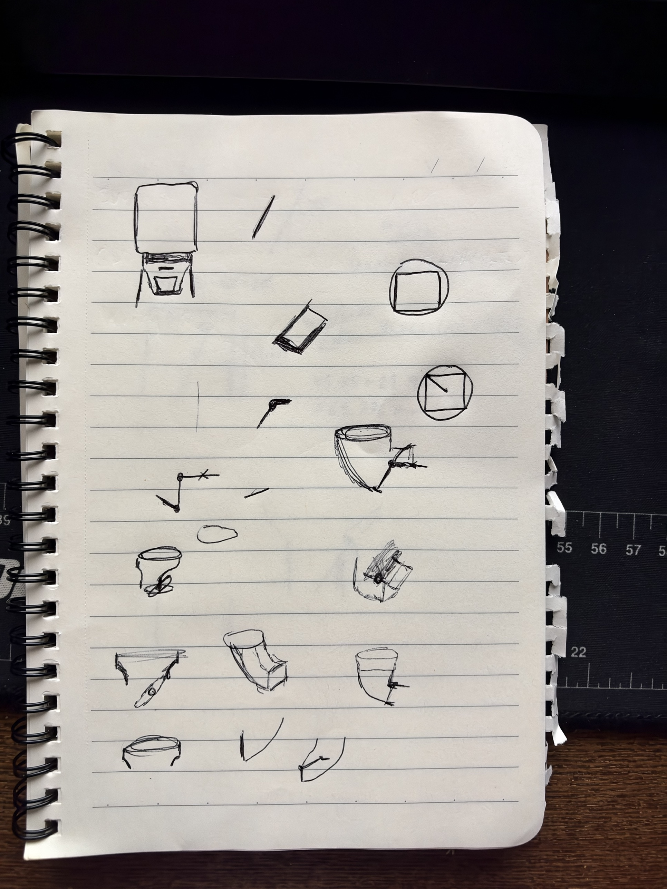
These are my brainstorming sketches for the mechanism. They cover the overall shape of a hopper on legs, a square outlet inside the round connector, several funnel shapes, and different ways of hinging a gate with a lever and a pivot.
I worked out the gate geometry by hand on notebook paper before modeling it: a sketch of the gate and its pivot, and the trigonometry for how far it travels. The page is here as a PDF: Hand sketch and calculation of the gate geometry (PDF). I did the rest of the design directly in SolidWorks.
| Component | Qty | Function | Printed or purchased |
|---|---|---|---|
| Base (funnel and gate box) | 1 | Screws onto the jar, funnels the almonds to the outlet, and holds the gate and the paddle | Printed, translucent PETG |
| Gate | 1 | Blocks the outlet and swings open to let almonds out | Printed, matte PLA |
| Paddle | 1 | The lever the user presses to open the gate | Printed, matte PLA |
| Front leg | 1 | Raises the front of the dispenser | Printed, matte PLA |
| Back leg | 1 | Raises the back of the dispenser | Printed, matte PLA |
| Spring | 1 | Closes the gate when the paddle is released | Purchased, 10 mm long, extension spring |
| Thread inserts | 11 | Give the printed holes a metal thread for the screws | Purchased, M3 |
| M3 screws | 10 in total | Pivots for the paddle and gate (20 mm and 14 mm) and leg attachment into the thread inserts (7 mm) | Purchased, in three lengths: 20 mm, 14 mm, and 7 mm |
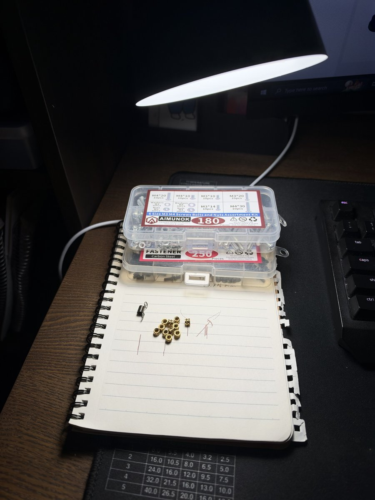
Purchased hardware: M3 screws from an assortment kit, brass thread inserts, and the spring.
I modeled each part in SolidWorks and then assembled them. The base is the most complex part, so I show it step by step. Each picture adds one feature to the previous one. The other parts were simple enough that I show only the final model.
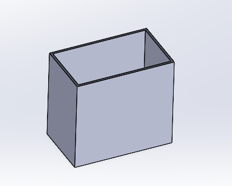
Step 1, shelled rectangular prism: I started with a rectangular box and shelled it, so it is hollow with thin walls. This becomes the gate box at the bottom of the funnel.
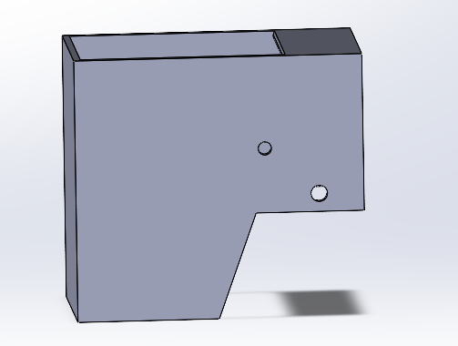
Step 2, added the paddle and spring holes: I cut a notch into the lower edge and added the holes that the paddle and the spring attach to.
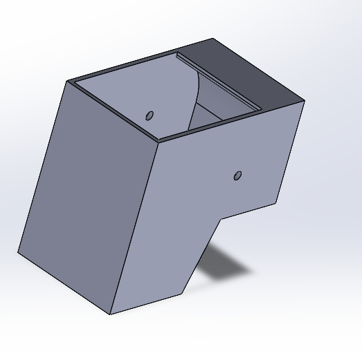
Step 3, added the paddle and gate holes, the gate curve, and cut the bottom: I added the pivot holes for the paddle and the gate, a curved surface inside for the gate to sweep against, and cut the bottom to open the outlet.
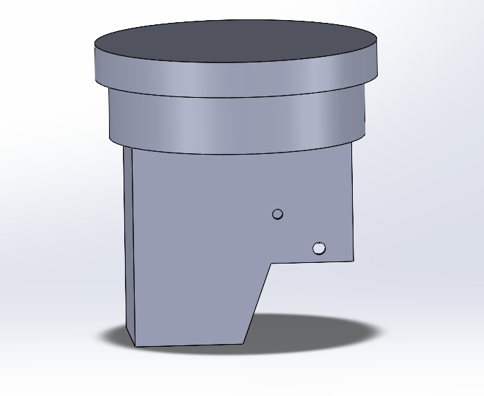
Step 4, added the funnel base: I added the round connector on top of the box. At this stage its outside diameter was 92 mm, the same as the original lid. I increased it to 95 mm later (see Design Decisions).
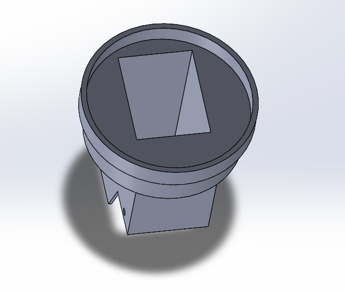
Step 5, cut through the funnel base: I cut an opening through the floor of the connector so the almonds can fall into the box.
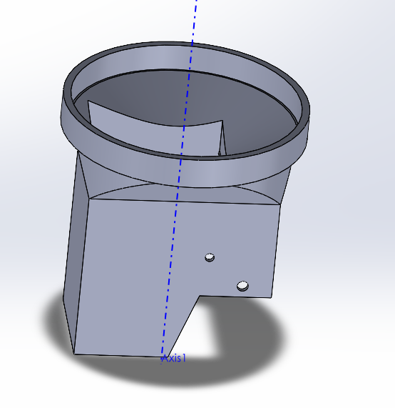
Step 6, shaped the inside and outside of the funnel so almonds do not get stuck: I blended the round connector into the rectangular box with curved surfaces, so there are no flat ledges for almonds to sit on.
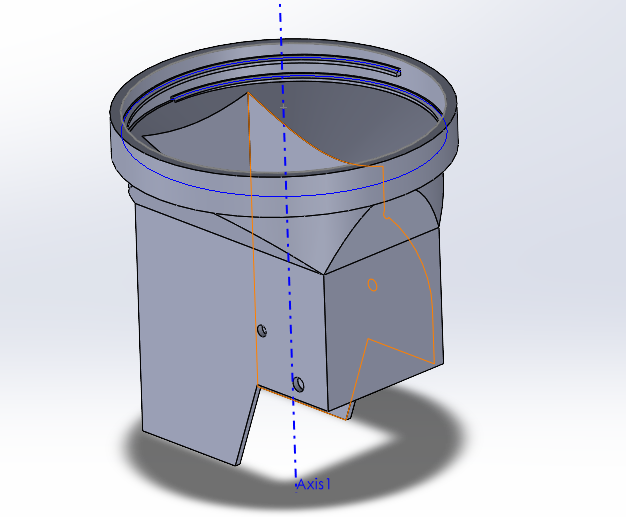
Step 7, added the threads: I added the internal thread in the connector so that it screws onto the jar neck. It uses the jar's 5.44 mm pitch and a single start, with 0.2 mm of clearance.
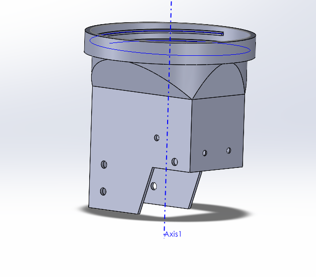
Step 8, added the leg holes: I added the holes where the front and back legs attach.
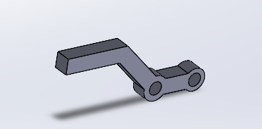
Paddle, first version: a flat arm with a rectangular pad that I press, and a rounded end with holes for the pivot.
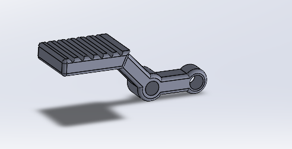
Paddle, final version: I made the paddle look better and increased the surface area of the pad, so it is easier to press with a finger. The grooves help the finger stay on the pad.
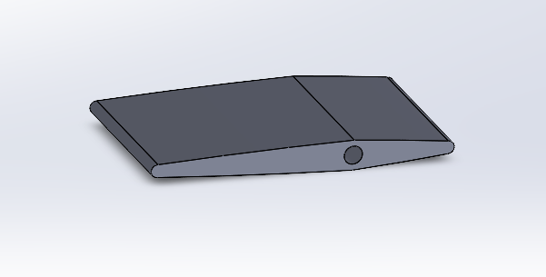
Gate: a flat, wedge-shaped plate with a pivot hole. It blocks the outlet when closed and swings open when the paddle is pressed.
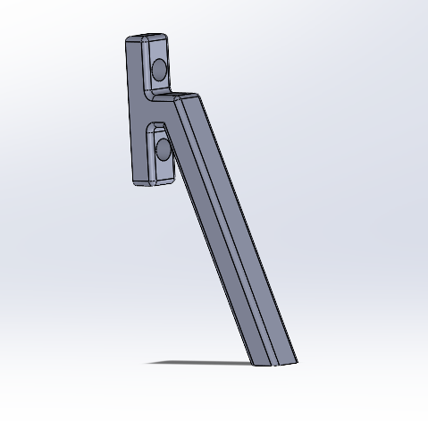
Front leg: a long bar with a mounting tab and holes at the top for attaching to the base.
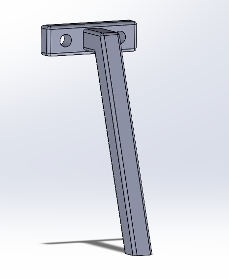
Back leg: a long bar with a flat crosspiece at the top, with a hole at each end for attaching to the base.
1. How the dispenser connects to the jar.
2. How to stop the almonds from jamming.
3. How the outlet opens and closes.
4. The paddle pad. I redesigned the paddle with a wider, grooved pad so it is easier to press with one finger.
5. Legs. I used a front leg and a back leg to raise the dispenser, so a plate or a hand fits under the outlet. The front leg is about 62 mm long and the back leg about 72 mm long, because they connect to different parts of the base. Once both are mounted, the base sits flat.
The funnel and gate box have to leave enough room for the gate to swing open. I worked out the room needed with basic trigonometry, by treating the gate as a straight bar that turns about its pivot. The gate is 70 mm long and the pivot sits one third of the way along it, 23.33 mm from the short end, which leaves 46.67 mm (two thirds) on the long side. I wanted it to be able to rotate 70 degrees. I put the pivot one third of the way along for two reasons. A short side means the short end travels less inside the funnel, which makes it easier to route the almonds to the exit. It also means the paddle needs less motion to turn the gate, so I can move the gate faster.
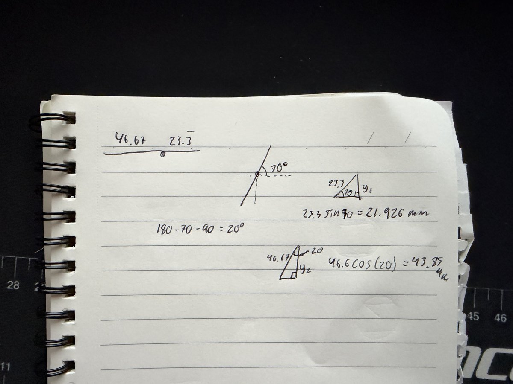
Calculation by hand: two right triangles, one for each side of the pivot.
| Side of the pivot | Arm length | Calculation | Vertical reach |
|---|---|---|---|
| Short side | 23.33 mm | 23.33 × sin(70°) | 21.93 mm |
| Long side | 46.67 mm | 46.67 × cos(20°), where 20° = 180° − 70° − 90° | 43.85 mm |
When the gate has turned 70 degrees, the short end moves up into the funnel by about 21.9 mm, and the long end moves down by about 43.9 mm. The funnel and gate box need at least that much room on each side so the gate does not hit a wall. I used loose dimensions in the gate box, so it has extra room beyond these numbers.
The course notes give starting clearances of about 0.2 to 0.3 mm per side for a moving pin in a hole, and they say to confirm them with test prints [9]. The thread has to fit a jar I could not change, so I measured the jar neck and designed the connector around it.
The dimensions of the other interfaces are deliberately loose. The only thing the dispenser has to do is keep almonds from getting through where they should not, and almonds are large. Their thickness is about 9.6 to 9.9 mm on average for the varieties in the USDA report [2]. Any gap in the design only has to be smaller than that, so the pivots and the gate can have generous clearance.
| Interface | Jar measurement or designed value | How I arrived at it | Result |
|---|---|---|---|
| Connector thread on the jar thread | Jar neck 85.57 mm without the thread and 88.55 mm with it. Pitch 5.44 mm, ridge width 3.00 mm, single start, about 365 degrees. Clearance: 0.2 mm. | I measured the jar with calipers and modeled the internal thread to match, with 0.2 mm of clearance, the low end of the range in the course notes [9]. | The connector screws onto the jar neck. |
| Paddle and gate pivots on their screws | 0.2 mm | The low end of the 0.2 to 0.3 mm per side range in the course notes [9]. A gap this small is far too small for an almond to pass through. | The paddle and gate move freely. |
| Outlet opening vs. almond size | The outlet is sized from the gate, which is 38 mm wide, much wider than the largest almond width. | Larger than the biggest almond, 25.13 by 14.29 by 9.93 mm for the Independence variety [2]. | Almonds pass through the outlet without jamming. |
The Bambu Lab A1 printing the base in translucent PETG. The round connector sits on the build plate, and tree supports grow up inside it.
I printed the base in translucent PETG and the other parts in Overture Matte PLA, all on my own Bambu Lab A1 with a 0.4 mm nozzle and a textured PEI plate. I sliced in Bambu Studio, with the 0.20mm Standard @BBL A1 process.
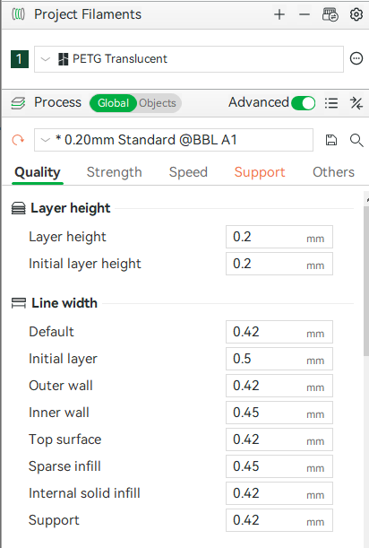
Base print: filament and process, with layer height and line width.
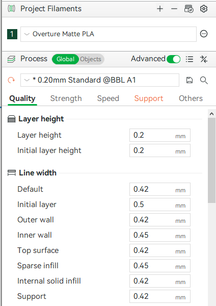
Other parts: filament and process. The other settings panels for these parts match the base print.
| # | Question | Answer |
|---|---|---|
| 1 | What number machine did you use? | I used my own printer, a Bambu Lab A1, so there is no lab machine number. |
| 2 | Did you use a raft? If so, what were the settings? | No raft. The base printed directly on the textured PEI plate. |
| 3 | What was the wall thickness? | 2 wall loops: 0.42 mm for the outer wall and 0.45 mm for the inner wall, so about 0.87 mm of printed wall. Top shell 5 layers (1 mm) and bottom shell 3 layers. In SolidWorks the connector wall is 3 mm thick, so the rest of that wall is filled by the 15 percent infill. |
| 4 | What infill did you use and why? | 15 percent, grid pattern. This is the A1 profile default. The walls carry most of the load in a thin-walled part, so more infill would add print time without much extra strength. |
| 6 | What did you use to remove the supports? | I pulled the supports off by hand and cleaned up the surfaces with a knife. |
| 7 | How many layers are used in the print? | About 499 layers: the base is 99.78 mm tall and the layer height is 0.2 mm. |
| 8 | What is the layer thickness? | 0.2 mm, with an initial layer of 0.2 mm. |
| 9 | What is the build volume of your print? | About 95 by 95 by 100 mm for the base. From its STL file, the base measures 95.00 by 94.84 by 99.78 mm, and the round connector, 95 mm across, is the widest part. |
I used supports on the base. I turned them on, because the A1 profile has them off by default. I used tree (auto) supports with a 30 degree threshold angle, so any surface that overhangs more than that gets support. I left "on build plate only" unchecked, so supports can also grow from the part itself, and I turned on "remove small overhangs." The supports sit 0.3 mm below the part they hold up (top Z distance), 0.2 mm above the bed or part under them (bottom Z distance), and 0.5 mm away from the sides of the part. Two interface layers with 0.5 mm line spacing form a denser skin under the part. That gives a smoother surface and makes the supports easier to remove. The base pattern spacing is 2.5 mm. The supports use 3.95 m of filament (11.88 g) on top of 19.13 m (57.51 g) for the model itself. I needed them because the base prints with the round connector on the plate, so the funnel, the gate box, and the underside of the internal thread overhang. The video shows the tree supports growing up inside the round connector.
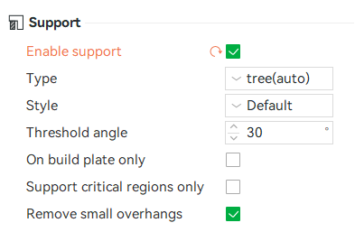
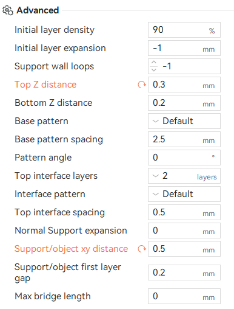
Where the tree supports touched the part, the surface is rougher and more matte than the surfaces printed against the plate or the walls, with small marks where the supports made contact. The two interface layers help the supports come off more cleanly. Inside the round connector, the supports leave the underside of the thread ridges rougher, which I cleaned up so the thread turns smoothly on the jar.
I printed the base on its own plate, in translucent PETG, because it is the largest part and the one that needs supports. The paddle, gate, and legs went on a separate plate in matte PLA, laid out flat with space between them. The slicing picture in section 14 shows the base on its plate.
I printed the base with the round connector on the build plate and the gate box above it, as the video shows. That puts the large, flat ring of the connector on the plate, so the first layer has a lot of contact and the connector, which has to be round to fit the jar thread, prints with circular layers. The funnel and gate box overhang from there, which is why the base needs supports. The paddle, gate, and legs are simple parts, so I printed them lying flat.
The settings were the same for the base and the other parts, apart from the filament.
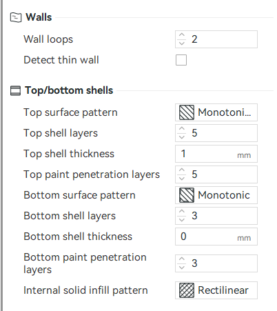
Walls and shells: 2 wall loops, 5 top shell layers (1 mm), and 3 bottom shell layers.
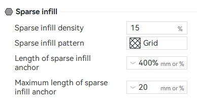
Infill: 15 percent, grid pattern.
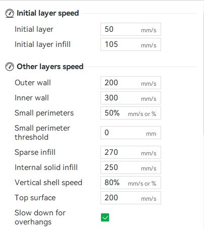
Speed: initial layer 50 mm/s and initial layer infill 105 mm/s. Outer wall 200 mm/s, inner wall 300 mm/s, small perimeters 50 percent, sparse infill 270 mm/s, internal solid infill 250 mm/s, vertical shell speed 80 percent, and top surface 200 mm/s. "Slow down for overhangs" is on.
Layer height and line width: layer height and initial layer height are both 0.2 mm. Line widths are 0.42 mm for the default, outer wall, top surface, internal solid infill, and support, 0.45 mm for the inner wall and sparse infill, and 0.5 mm for the initial layer.
Supports: turned on, tree (auto), as described in section 5.
I changed only the support settings from the A1 profile defaults, which the screenshots highlight in orange. I turned supports on and chose tree supports, because they use less filament than normal supports and are easier to remove from a part with many overhangs. The 30 degree threshold means surfaces steeper than that get support. The top Z distance (0.3 mm) and the support/object XY distance (0.5 mm) leave a small gap between the supports and the part, so the supports break away without damaging it, and the two interface layers give the supported surfaces a smoother finish. I changed these settings to make pulling the supports off smoother and easier.
I sliced in Bambu Studio because I print on a Bambu Lab A1. The slicing result for the base is below.
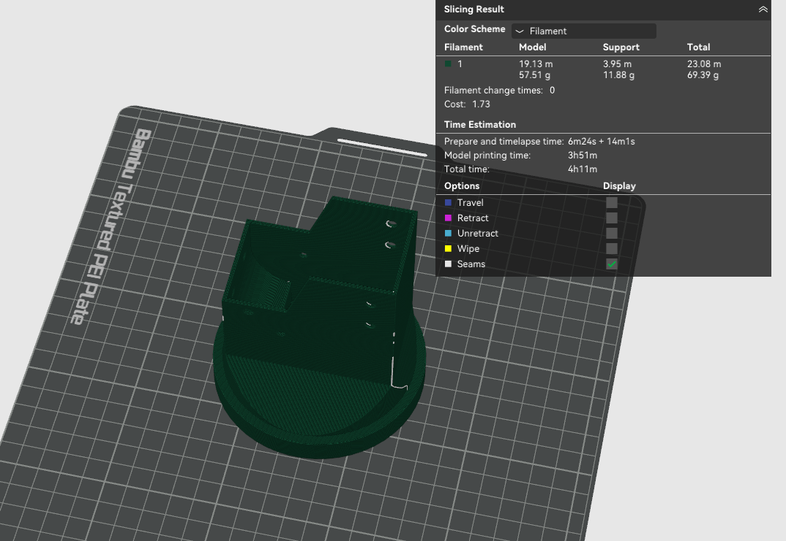
| Item | Model | Support | Total |
|---|---|---|---|
| Filament length | 19.13 m | 3.95 m | 23.08 m |
| Filament weight | 57.51 g | 11.88 g | 69.39 g |
Model printing time was 3 hours 51 minutes, and the total time was 4 hours 11 minutes, which includes 6 minutes 24 seconds of preparation and a 14 minute timelapse allowance.
Time: the assignment took about 17 hours 41 minutes from start to finish, roughly 17.7 hours. About 2 hours went to brainstorming, about 3.5 hours to CAD, about 4 hours to research, and about 2.5 hours to other work such as slicing and formatting this portfolio page. Printing the base took 4 hours 11 minutes by the slicer's estimate, and assembly took about 1.5 hours.
Resources: Bambu Lab A1 3D printer, Bambu Studio, SolidWorks, translucent PETG, Overture Matte PLA, a spring, thread inserts, and M3 screws. For research I used the USDA almond report, patents for similar dispensers, and the Toptal article.
Changes to the plan: I redesigned the paddle with a wider, grooved pad after the first version, and I shaped the funnel so there are no flat ledges for the almonds to catch on.
Mistakes:
What I would change: I would print a short thread test coupon before the full base, so I could check the thread clearance before spending about 4 hours on the print. I would also add an adjustable stop to limit how far the gate opens, like the patents I found [5][6], so the amount of almonds per press could be tuned.
SolidWorks files for each part. Put all of the files in the same folder before opening them.
AI was used to help find sources 2 to 8 and to draft the text of this page from my notes, measurements, and CAD and slicer screenshots. I reviewed and edited the draft.
Tools: Bambu Lab A1 3D printer, Bambu Studio slicer, SolidWorks, translucent PETG, Overture Matte PLA, a spring, thread inserts, and M3 screws.